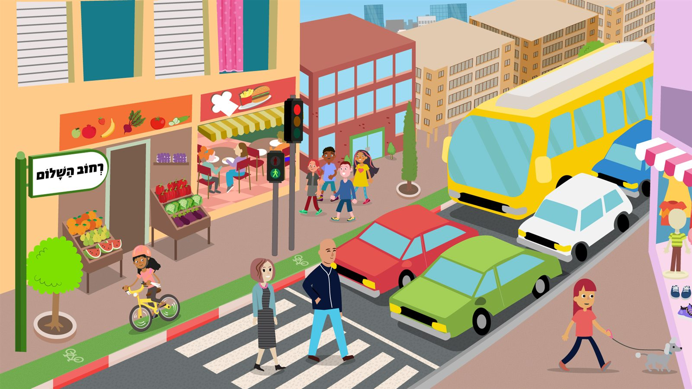

<!doctype html>
<html lang="he" dir="rtl">
<head>
<meta charset="utf-8">
<title>מָה יֵשׁ בָּרְחוֹב? — תָּוִיּוֹת</title>
<link href="https://fonts.googleapis.com/css2?family=Noto+Sans+Hebrew:wght@400;700;800&family=Rubik:wght@800&display=swap" rel="stylesheet">
<link rel="stylesheet" href="../shared/print-ind.css?v=1">
<style>
/* R8 #1: the lesson's street picture with 8 numbered arrows (SPOTS positions in ma-yesh-barechov/data.js); write the words; p2 = answer key */
.st{position:relative;width:190mm;height:106.9mm;flex-shrink:0}
.st img{width:100%;height:100%;display:block;border-radius:2mm}
.st svg{position:absolute;inset:0;width:100%;height:100%}
.ls{display:grid;grid-template-columns:1fr 1fr;gap:0 10mm}
.ls .pi-wr b{width:8mm;font:800 15pt 'Rubik'}
</style>
<script src="ma-yesh-barechov/data.js?v=1"></script>
<script src="../shared/print-ind.js?v=1"></script>
</head>
<body>
<div id="pages"></div>
<script>
/* [number, word, spot x %, y %, label offset] — targets = BARECHOV.SPOTS centres */
const L = [[1, 'כְּבִישׁ', 22, 96, [-6, -8]], [2, 'אוֹטוֹבּוּס', 79, 30, [-6, -10]], [3, 'רַמְזוֹר', 41.5, 38, [4, -10]], [4, 'מְכוֹנִית', 58, 61, [-6, -8]],
  [5, 'עֵץ', 8, 73, [-4, -10]], [6, 'בִּנְיָנִים', 51, 17, [-6, -8]], [7, 'חֲנוּת יְרָקוֹת', 23, 54, [3, -11]], [8, 'מִסְעָדָה', 34, 31, [-5, -10]]];
const svg = () => `<svg viewBox="0 0 160 90" preserveAspectRatio="none"><defs><marker id="ah" viewBox="0 0 10 10" refX="8" refY="5" markerWidth="5" markerHeight="5" orient="auto"><path d="M0 0L10 5L0 10Z" fill="#fff" stroke="#1f2433" stroke-width="1.2"/></marker></defs>
  ${L.map(([n, w, x, y, [dx, dy]]) => { const X = x * 1.6, Y = y * .9, lx = X + dx * 1.6, ly = Y + dy * .9;
    return `<line x1="${lx}" y1="${ly}" x2="${X}" y2="${Y}" stroke="#1f2433" stroke-width="1.6"/><line x1="${lx}" y1="${ly}" x2="${X}" y2="${Y}" stroke="#fff" stroke-width=".7" marker-end="url(#ah)"/>
      <circle cx="${lx}" cy="${ly}" r="3.8" fill="#fff" stroke="#1f2433" stroke-width=".9"/><text x="${lx}" y="${ly + 1.9}" text-anchor="middle" font-family="Rubik,Arial" font-weight="800" font-size="5.4" fill="#1f2433">${n}</text>`; }).join('')}</svg>`;
const page = ex => PI.page(`${PI.top('מָה יֵשׁ בָּרְחוֹב?', { tag: ex ? 'Answer key' : '' })}
  ${PI.ins(0, 'כִּתְבוּ אֶת הַמִּלָּה הַנְּכוֹנָה לְיַד כָּל מִסְפָּר.')}
  <div class="st gs">${svg()}</div>
  <div class="ls">${L.map(([n, w]) => `<div class="pi-wr"><b>${n}.</b><span class="ln">${ex ? w : ''}</span></div>`).join('')}</div>
  ${PI.bank(['כְּבִישׁ', 'אוֹטוֹבּוּס', 'רַמְזוֹר', 'מְכוֹנִית', 'עֵץ', 'בִּנְיָנִים', 'חֲנוּת יְרָקוֹת', 'מִסְעָדָה'])}`);
document.getElementById('pages').innerHTML = page(false) + page(true);
</script>
</body>
</html>
